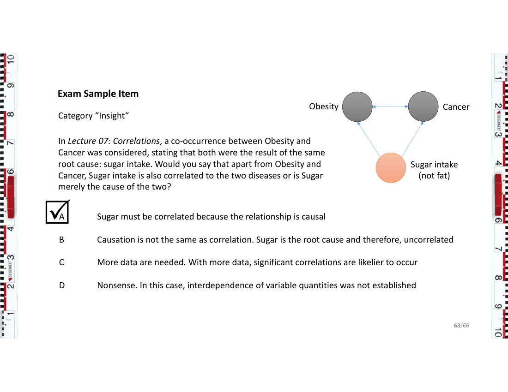

L07-E01 / Insight / 选择题
根因也相关吗？

题干中文辅助（原译文）
考试样题
类别 “洞察“
肥胖
癌症
糖摄入
（不是脂肪）
在第 07 讲：相关中，考察了肥胖与
癌症之间的共现，指出二者都是同一
根本原因的结果：糖摄入。你会说，除肥胖和
癌症之外，糖摄入也与这两种疾病相关，还是糖
仅仅是二者的原因？
A
糖必定相关，因为这种关系是因果性的
B
因果性不同于相关性。糖是根本原因，因此不相关
C
需要更多数据。数据越多，显著相关越可能出现
D
无稽之谈。在此例中，变量之间的相互依存关系并未确立
62/66
我的作答
查看老师答案与逐项解释 / 来源
以下为依据课件整理的逐项解释。未被选中不等于概念从未讲过；“无题设依据”也不等于全课未出现。
| 选项 | 为什么选 / 为什么错 | 依据原页 |
|---|---|---|
| A | 正确在题设已经给定因果关系的前提下，老师选 A。 | |
| B | 推理错误因果与相关有区别，不意味着根因反而不相关。 | |
| C | 答非所问把题设关系问题换成了样本量与显著性。 | |
| D | 违背题设忽略题目已经给定的共同根因关系。 |
这些选项的概念，课件正文是否出现过？
检索全部 903 页，排除已收录题目、答案页和可识别的样题 / 参考文献页。下列为按原词检索的出现记录，可能包含变体遗漏；出现不代表定义正确，也不代表考试重点。错项判定仍以逐项解释和老师答案为准。
causation
正文原词命中 8 页
correlation
正文原词命中 56 页
L00 · 第 2 页 ↗L01 · 第 3 页 ↗L01 · 第 6 页 ↗L01 · 第 12 页 ↗L01 · 第 48 页 ↗L03 · 第 47 页 ↗L05 · 第 79 页 ↗L07 · 第 1 页 ↗L07 · 第 2 页 ↗L07 · 第 4 页 ↗L07 · 第 5 页 ↗L07 · 第 6 页 ↗L07 · 第 7 页 ↗L07 · 第 8 页 ↗L07 · 第 9 页 ↗L07 · 第 10 页 ↗L07 · 第 11 页 ↗L07 · 第 12 页 ↗L07 · 第 13 页 ↗L07 · 第 14 页 ↗L07 · 第 15 页 ↗L07 · 第 16 页 ↗L07 · 第 17 页 ↗L07 · 第 18 页 ↗L07 · 第 19 页 ↗L07 · 第 20 页 ↗L07 · 第 21 页 ↗L07 · 第 31 页 ↗L07 · 第 34 页 ↗L07 · 第 35 页 ↗L07 · 第 39 页 ↗L07 · 第 40 页 ↗L07 · 第 41 页 ↗L07 · 第 42 页 ↗L07 · 第 46 页 ↗L07 · 第 48 页 ↗L07 · 第 50 页 ↗L07 · 第 52 页 ↗L07 · 第 53 页 ↗L07 · 第 58 页 ↗L07 · 第 60 页 ↗L08 · 第 2 页 ↗L08 · 第 3 页 ↗L08 · 第 4 页 ↗L08 · 第 24 页 ↗L08 · 第 35 页 ↗L08 · 第 44 页 ↗L09 · 第 66 页 ↗L09 · 第 67 页 ↗L10 · 第 68 页 ↗L12 · 第 2 页 ↗L12 · 第 6 页 ↗L12 · 第 7 页 ↗L12 · 第 31 页 ↗L12 · 第 62 页 ↗L12 · 第 63 页 ↗
sample size
正文原词命中 11 页
老师原答案与题目延续
